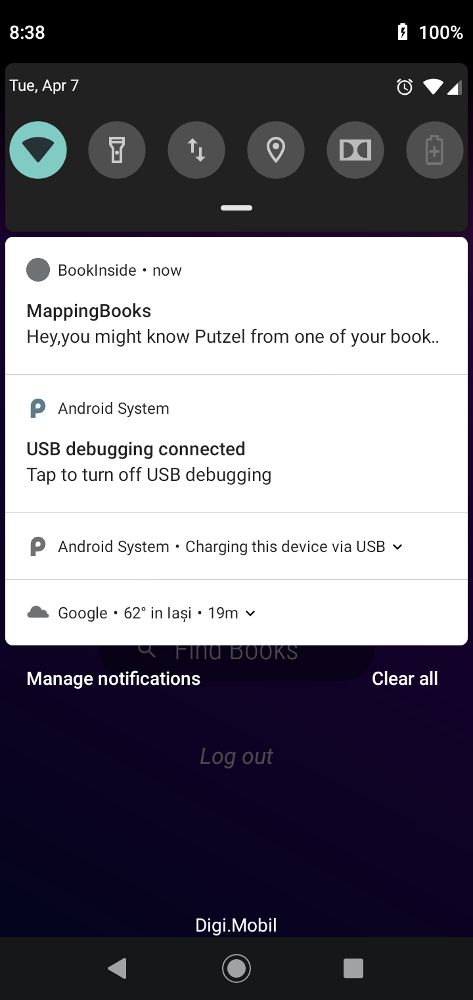
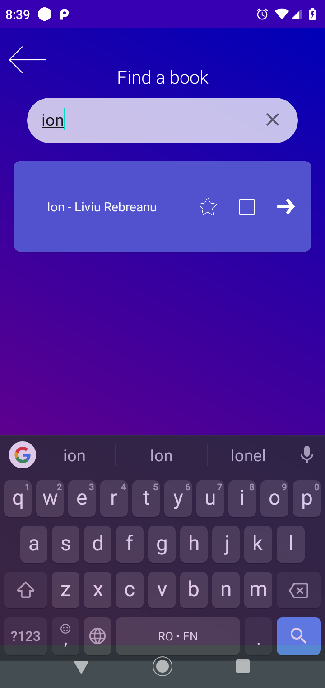
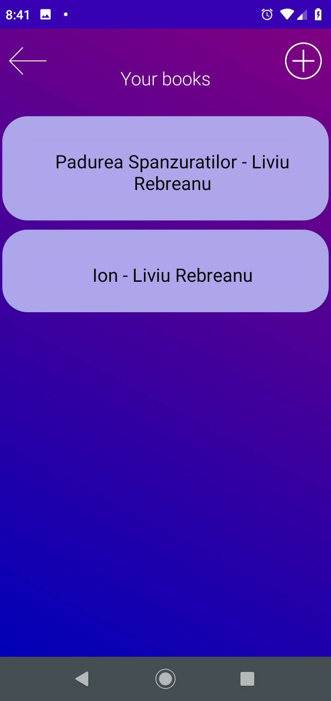
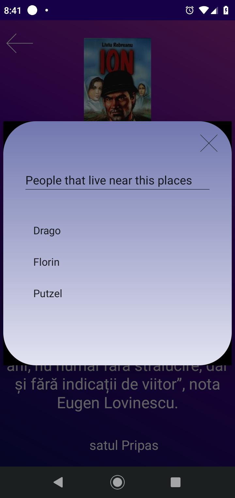

Echipa
- Irimia Andreea Gabriela
- Caloian Andrei George
- Ciocirtau Dragos
- Putanu Alexandru
- Georgescu Florin
Abstract
Aceasta pagina contine informatii despre Proiectul BookInside, proiectul cu numarul 8.
Descrierea proiectului
Cerinta proiectului este:O aplicație vă preia informații despre lecturile pe care le aveți, momentul lecturii, precum și minimale aprecieri asupra cărților citite. Prelungiți aplicația pentru a vă semnala când vă aflați în proximitatea unei persoane care a citit aceeași carte, recent ori mai de mult. Aplicația vă poate facilita o întâlnire cu acea persoană.
Progres
Pana în momentul redactarii acestui document, aplicația noastră are urmatoarele caracteristici:
Aplicația BookInside poate fi instalata pe un dispozitiv Android și permite autentificarea utilizatorilor prin username și parola. Aceasta va cere, după instalare, acces la locatie, pentru a putea folosi poziția utilizatorului în calculul proximitatii geografice de punctele din baza noastră de date.
Baza de date consta deocamdata intr-o serie de fisiere de tip json, deoarece accesul este foarte usor din serverul node.js, dar in curand vom transfera toate aceste date si metode de acces pe un server MongoDB. Intrarile sunt organizate in 3 categorii:
- Utilizatori, despre care cunoastem locatia (latitudine si logitudine), date de autentificare (nume de utilizator, parola, email), date de contact (linkuri catre alte retele sociale adaugate de utilizator) si listele cu carti ( cartile citite in trecut, cartile in curs de citire si cartile ce urmeaza a fi citite de utilizator).
- Locatii, despre care cunoastem numele locatiei si coordonatele, impreuna cu o lista de utilizatori ce se afla in aproprierea acest locatii. Actualizarea listelor cu utilizatori apropiati de locatii se face automat, pentru fiecare logare a unui utilizator, prin preluarea locatiei acestuia din dispozitiv. De asemenea, adaugarea unei noi locatii se face pentru fiecare noua carte adaugata.
- Carti, despre care cunoastem titlul,autorul, descrierea, locatiile din carte dar si un link catre o poza cu coperta, pentru a fi afisata in aplicatie mai atractiv.
Dupa logare, utilizatorului ii este prezentat dashboard-ul, meniul aplicatiei, din care poate verifica listele de carti sau poate sa caute alte carti. In fundal, aplicatia sincronizeaza locatia curenta a utilizatorului si o trimite la server, apoi descarca o lista de posibile contacte, pentru a le afisa sub forma unor notificari. Un alt utilizator este considera posibil contact, daca pozitia lui este in apropierea unei locatii din cartea pe care primul utilizator o citeste acum. Odata apasata o notificare, in aplicatia de e-mail a telefonului este deschis un nou mesaj catre persoana care a produs notificarea.
In pagina de carti citite, va fi afisat raspunsul de la server, anume o lista de carti sub forma titlu - autor astfel:

Pentru a adauga o carte la aceasta lista, ea trebuie mai intai cautata. Cu unul din butoanele din card-ul cartii, putem adauga cartea gasita la lista de carti citite,in curs de citire sau care urmeaza a fi citite.
Dupa ce am apasat pe al 2-lea buton, asa arata lista noastra cu carti in curs de citire. In fundal, serverul a actualizat lista cu carti a utilizatorului curent.
Detaliile despre o carte sunt afisate in aceasta ordine: Titlu, autor, descriere, locatii.
Pentru fiecare locatie, aplicatia poate afisa o lista de utilizatori din apropierea locatiei astfel:
Lucrul cu api-uri externe aplicatiei noastre
Am folosit geopy din python pentru determinarea unor locatii si obnerea coordonatelor si adresei complete ,tot cu ajutorul geopy si folium implementarea unei harti si posibilitatea de a vedea locatiile introduse.
Impartirea sarcinilor
Pana acum s-a respectat impartirea sarcinilor de la inceput, in sensul ca:
- Irimia Andreea Gabriela s-a ocupat de front-end.
- Caloian Andrei George s-a ocupat de documentare si implementare pentru api-uri externe.
- Ciocirtau Dragos, impreuna cu Putanu Alexandru s-au ocupat de implementarea back-end pentru aplicatie si de serverul Node, impreuna cu baza de date curenta ( cea fara MongoDB ).
- Georgescu Florin a lucrat la implementarea MongoDB pentru server.